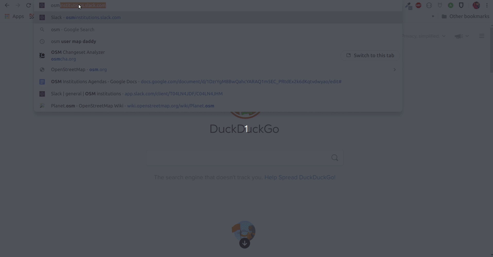
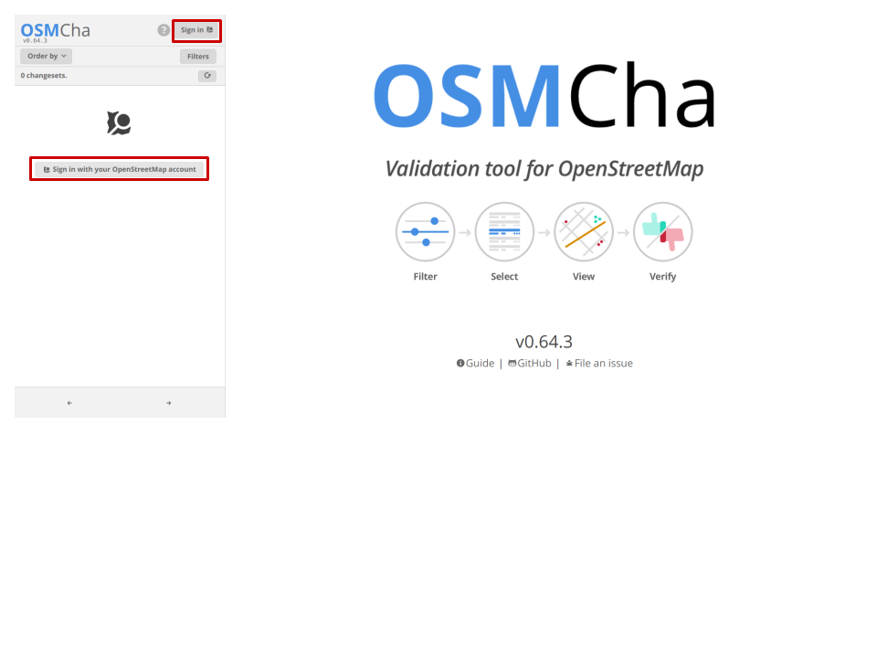
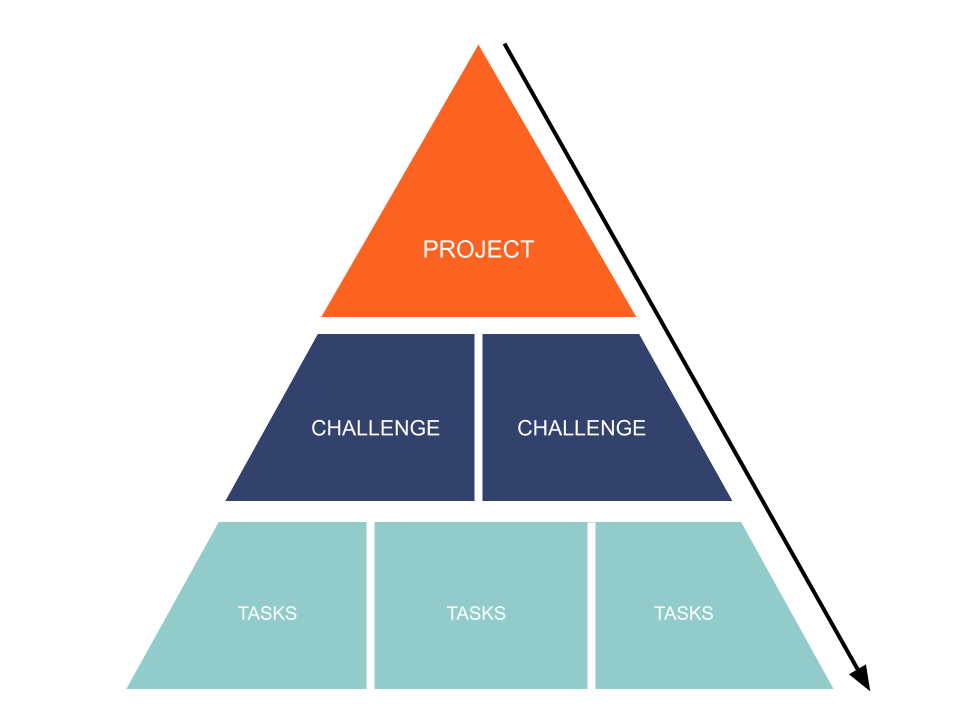
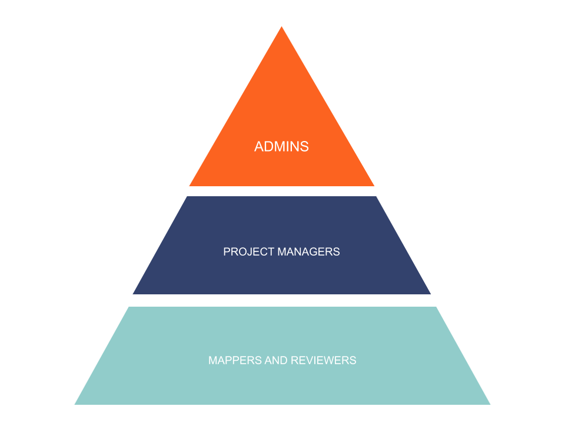
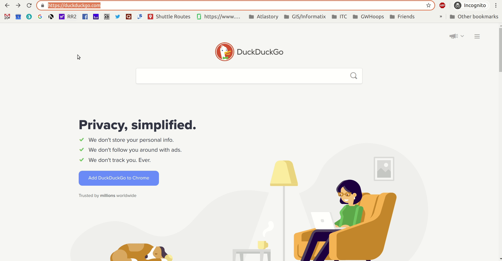

Beyond the OSM TM & Editors
youthmappers, April 17th
Who is this dude on Zoom?
What is he going to talk about?
Why should I care?
OSM is an ecosystem with many tools and software built around the mapping database.
Some of the tools built off of OSM are:
- The ID and JOSM editors
- OSMCha
- MapRoulette
- ResultsMap
- FieldPapers
- Osmose
OSMCha = OpenStreetMap Changeset Analyzer.
Its a tool that can be used for validation and data quality analysis.
Created by Wille Marcel in 2015 and is hosted by MapBox
Why OSMCha?
- Offers advanced filtering options for reviewing OSM changesets
- Help with validating changes, a community requirement
- Filter the roughly 30,000 daily changsets in OSM
- Monitor new users and/or ones commiting vandalism
Navigate to www.osmcha.org

Sign in with your OSM Account

MapRoulette is a micro-task platform for OpenStreetMap. MapRoulette.org gives you small Tasks you can complete in under a minute to improve OpenStreetMap.
The platform is organized as such:

How users are structured:

Navigate to maproulette.org and sign in with your OSM username
